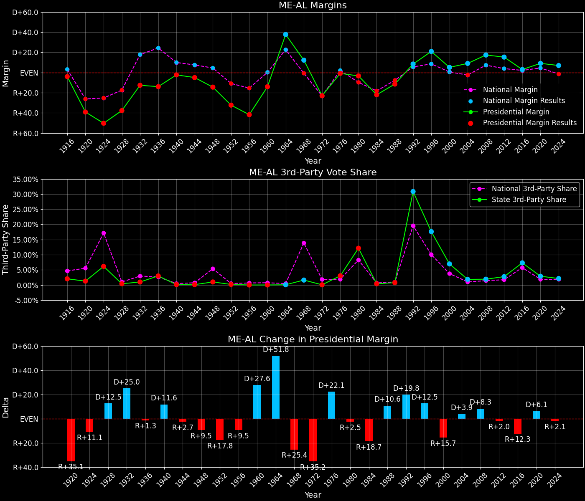

Maine (ME-AL) — Statewide

Margins · 3P share · Pres. deltas

Relative margins · Relative 3P · Rel. deltas
Maine (ME-AL) — Total Data
| Year | EVs | D | R | Margin | Rel. Margin | Nat. Margin | Margin Δ | Rel. Margin Δ | Nat. Margin Δ | Total votes |
|---|---|---|---|---|---|---|---|---|---|---|
| 1968 | 2 | 217,312(55.3%) | 169,254(43.1%) | D+12.2 | D+12.8 | R+0.6 | 392,936 | |||
| 1972 | 2 | 160,584(38.5%) | 256,508(61.5%) | R+23.0 | D+0.6 | R+23.5 | R+35.2 | R+12.3 | R+23.0 | 417,321 |
| 1976 | 2 | 232,279(49.2%) | 236,320(50.1%) | R+0.9 | R+3.1 | D+2.2 | D+22.1 | R+3.6 | D+25.7 | 472,094 |
| 1980 | 2 | 220,974(42.3%) | 238,522(45.7%) | R+3.4 | D+6.5 | R+9.9 | R+2.5 | D+9.6 | R+12.1 | 522,420 |
| 1984 | 2 | 214,515(38.8%) | 336,500(60.8%) | R+22.1 | R+3.9 | R+18.1 | R+18.7 | R+10.5 | R+8.2 | 553,144 |
| 1988 | 2 | 243,569(43.9%) | 307,131(55.3%) | R+11.5 | R+3.7 | R+7.7 | D+10.6 | D+0.2 | D+10.4 | 555,035 |
| 1992 | 2 | 263,420(38.8%) | 206,504(30.4%) | D+8.4 | D+2.8 | D+5.6 | D+19.8 | D+6.5 | D+13.3 | 679,499 |
| 1996 | 2 | 312,788(51.6%) | 186,378(30.8%) | D+20.9 | D+12.3 | D+8.6 | D+12.5 | D+9.5 | D+3.0 | 605,897 |
| 2000 | 2 | 319,951(49.1%) | 286,616(44.0%) | D+5.1 | D+4.6 | D+0.5 | R+15.7 | R+7.7 | R+8.0 | 651,790 |
| 2004 | 2 | 396,842(53.6%) | 330,201(44.6%) | D+9.0 | D+11.5 | R+2.5 | D+3.9 | D+6.9 | R+3.0 | 740,752 |
| 2008 | 2 | 421,923(57.7%) | 295,273(40.4%) | D+17.3 | D+10.1 | D+7.3 | D+8.3 | R+1.4 | D+9.7 | 731,163 |
| 2012 | 2 | 399,235(56.2%) | 291,418(41.0%) | D+15.2 | D+11.3 | D+3.9 | R+2.1 | D+1.3 | R+3.4 | 709,934 |
| 2016 | 2 | 354,718(47.7%) | 334,945(45.0%) | D+2.7 | D+0.6 | D+2.1 | R+12.5 | R+10.8 | R+1.8 | 743,941 |
| 2020 | 2 | 435,072(53.1%) | 360,737(44.0%) | D+9.1 | D+4.6 | D+4.4 | D+6.4 | D+4.1 | D+2.3 | 819,461 |
| 2024 | 2 | 435,652(52.4%) | 377,977(45.5%) | D+6.9 | D+8.5 | R+1.5 | R+2.1 | D+3.9 | R+6.0 | 831,375 |
Column explanations
- Year
- Election year.
- EVs
- Number of electoral votes allocated to this state or unit.
- D
- Number of votes for the Democratic candidate (raw count(pct%)).
- R
- Number of votes for the Republican candidate (raw count(pct%)).
- Margin
- Margin between the two major-party candidates, including third-party votes ((D - R)/total).
- Rel. Margin
- The presidential margin relative to the national presidential margin (Margin - Nat. Margin).
- Nat. Margin
- The national presidential margin for that year, including third-party votes ((D_total - R_total)/total_votes).
- Δ
- Change (delta) in the value from the previous election year. Blank if no data for previous year.
- Total votes
- Total voter turnout or ballots cast (when provided).
Maine (ME-AL) — Third-Party Data
| Year | Other votes | 3rd Party Share | 3rd Party Nat. Share | 3rd Party Rel. Share |
|---|---|---|---|---|
| 1968 | 6,370(1.6%) | T+1.6 | T+13.6 | T-12.0 |
| 1972 | 229(0.1%) | T+0.1 | T+0.1 | T-0.0 |
| 1976 | 3,495(0.7%) | T+0.7 | T+0.3 | T+0.4 |
| 1980 | 62,924(12.0%) | T+12.0 | T+7.0 | T+5.1 |
| 1984 | 2,129(0.4%) | T+0.4 | T+0.1 | T+0.3 |
| 1988 | 4,335(0.8%) | T+0.8 | T+0.2 | T+0.6 |
| 1992 | 209,575(30.8%) | T+30.8 | T+19.2 | T+11.6 |
| 1996 | 106,731(17.6%) | T+17.6 | T+9.7 | T+7.9 |
| 2000 | 45,223(6.9%) | T+6.9 | T+3.7 | T+3.3 |
| 2004 | 13,709(1.9%) | T+1.9 | T+0.8 | T+1.0 |
| 2008 | 13,967(1.9%) | T+1.9 | T+1.4 | T+0.5 |
| 2012 | 19,281(2.7%) | T+2.7 | T+1.6 | T+1.1 |
| 2016 | 54,278(7.3%) | T+7.3 | T+5.5 | T+1.8 |
| 2020 | 23,652(2.9%) | T+2.9 | T+1.8 | T+1.0 |
| 2024 | 17,746(2.1%) | T+2.1 | T+1.9 | T+0.3 |
Column explanations
- Year
- Election year.
- Other votes
- Number of votes for third-party (other) candidates (raw count(pct%)).
- 3rd Party Share
- Share of the vote received by third-party (other) candidates.
- 3rd Party Nat. Share
- The national third-party share for that year (3P votes / total votes).
- 3rd Party Rel. Share
- Third-party share relative to the national third-party share (3P share - Nat. 3P share).

Two-party margins · relative · deltas
Maine (ME-AL) — Two-Party Data
| Year | 2-Party Margin | 2-Party Nat. Margin | 2-Party Rel. Margin | 2-Party Margin Δ | 2-Party Nat. Margin Δ | 2-Party Rel. Margin Δ |
|---|---|---|---|---|---|---|
| 1968 | D+12.4 | R+0.7 | D+13.1 | |||
| 1972 | R+23.0 | R+23.6 | D+0.6 | R+35.4 | R+22.9 | R+12.5 |
| 1976 | R+0.9 | D+2.2 | R+3.1 | D+22.1 | D+25.8 | R+3.6 |
| 1980 | R+3.8 | R+10.6 | D+6.8 | R+3.0 | R+12.8 | D+9.9 |
| 1984 | R+22.1 | R+18.1 | R+4.0 | R+18.3 | R+7.5 | R+10.8 |
| 1988 | R+11.5 | R+7.8 | R+3.8 | D+10.6 | D+10.4 | D+0.2 |
| 1992 | D+12.1 | D+6.9 | D+5.2 | D+23.7 | D+14.7 | D+9.0 |
| 1996 | D+25.3 | D+9.5 | D+15.9 | D+13.2 | D+2.6 | D+10.7 |
| 2000 | D+5.5 | D+0.5 | D+5.0 | R+19.8 | R+8.9 | R+10.9 |
| 2004 | D+9.2 | R+2.5 | D+11.7 | D+3.7 | R+3.0 | D+6.7 |
| 2008 | D+17.7 | D+7.4 | D+10.3 | D+8.5 | D+9.8 | R+1.4 |
| 2012 | D+15.6 | D+3.9 | D+11.7 | R+2.0 | R+3.4 | D+1.4 |
| 2016 | D+2.9 | D+2.2 | D+0.6 | R+12.7 | R+1.7 | R+11.0 |
| 2020 | D+9.3 | D+4.5 | D+4.8 | D+6.5 | D+2.3 | D+4.2 |
| 2024 | D+7.1 | R+1.6 | D+8.7 | R+2.3 | R+6.1 | D+3.8 |
Column explanations
- Year
- Election year.
- 2-Party Margin
- Margin between the two major-party candidates, ignoring third-party votes ((D - R)/(D + R)).
- 2-Party Nat. Margin
- The national presidential margin for that year, including third-party votes ((D_total - R_total)/total_votes).
- 2-Party Rel. Margin
- The presidential margin relative to the national presidential margin (Margin - Nat. Margin).
- Δ
- Change (delta) in the value from the previous election year. Blank if no data for previous year.